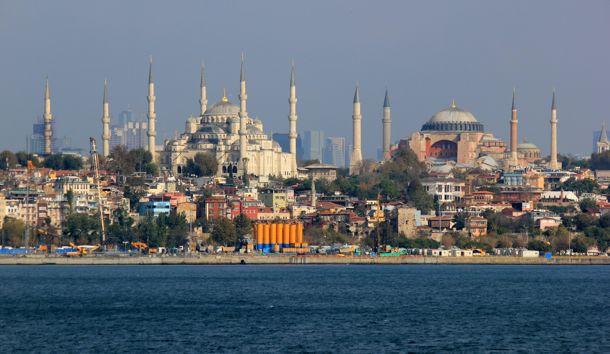
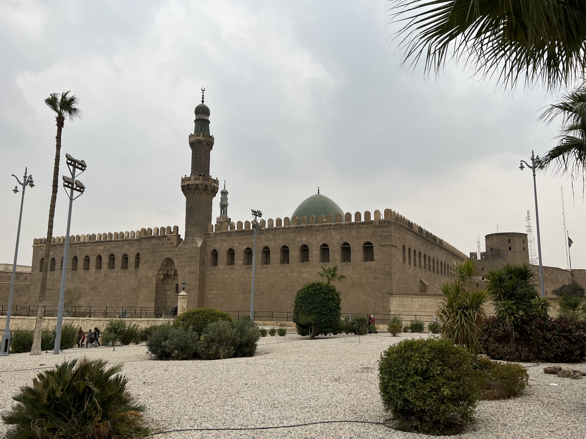

As the Ottomans embraced gunpowder, the Portuguese charted new oceans, and Europe forged cannon by the hundred — the Mamluks perfected arts of warfare that were already becoming obsolete.
They who cling to the sword shall perish not by the sword, but by those who perfected something better.
— Modern paraphrase of the Mamluk predicamentThe 15th century witnessed one of history's most rapid shifts in military technology. The development and mass deployment of gunpowder weapons — cannon, handguns, and mortars — fundamentally changed which qualities determined battlefield supremacy.
For centuries, elite cavalry had dominated Middle Eastern and Central Asian warfare. A Mamluk soldier, trained from childhood in horsemanship and archery, represented the pinnacle of this tradition. A skilled Mamluk rider could loose twelve arrows per minute at a full gallop — a feat that took years to master.
Firearms required neither the years of training nor the aristocratic background of the traditional warrior class. A peasant conscript armed with a musket, after weeks of training, could kill a master of the furusiyya from a distance. For the Mamluk military class, this was not merely a tactical problem — it was an existential affront to their identity and social position.
The Mamluk response was revealingly cultural: they largely refused to use firearms. Some sultans specifically prohibited Mamluk soldiers from carrying guns, viewing them as weapons unworthy of their class. This was not mere arrogance — it was the rational self-preservation of an elite whose power depended on skills that firearms made irrelevant.

The contrast with the Ottoman Empire could not be more instructive. Sharing a cultural heritage and much of the same religious and geographic context, the Ottomans made radically different choices — and by the mid-15th century, those choices were paying enormous dividends.
The contrast is especially sharp given that the Mamluks were not ignorant of gunpowder technology — they used cannon in some sieges and were aware of Ottoman developments. The failure was not one of knowledge but of will: the social structure of the Sultanate made genuine military modernization politically unthinkable.
If Ottoman artillery threatened the Mamluks militarily, Portuguese seamanship threatened them economically — and both threats materialized within a generation.
The Mamluk Sultanate's prosperity rested, to a remarkable degree, on its position as the middleman of the global luxury trade. Spices from the Moluccas, textiles from India, and silks from China all passed through Mamluk territory on their way to the markets of Venice and Genoa. The Mamluks collected substantial tolls at every chokepoint, and these revenues funded their palaces, armies, and scholars.
In 1488, Portuguese navigator Bartolomeu Dias rounded the Cape of Good Hope. A decade later, Vasco da Gama completed the first sea voyage from Europe to India, arriving in Calicut in 1498. The implications were immediate and devastating: Europe now had a direct maritime route to Asia that bypassed Mamluk territory entirely.
The Mamluk response to the Portuguese maritime challenge was instructive of their broader pattern: they recognized the threat, attempted a response, and failed — not from lack of effort but from structural inadequacy.
The Mamluks sent a fleet to the Indian Ocean in 1505 to confront the Portuguese. It was an expensive, technologically inferior force that met decisive defeat at Diu in 1509 — and was never meaningfully rebuilt.
— Historical summary of the Mamluk-Portuguese naval conflictThe naval failure exposed a critical weakness: the Mamluks had no meaningful tradition of oceanic shipbuilding or naval warfare. Their revenues had always come from taxing others' sea trade, not from commanding the seas themselves. When Portuguese carracks began dominating the Indian Ocean with cannon-armed hulls, the Mamluks had no institutional response.
Historians sometimes frame the Mamluk decline as a story of technological failure — that they simply missed the gunpowder revolution and paid the price. But this misses the deeper issue: the Mamluks were structurally incapable of the reforms that might have saved them.
To truly modernize militarily, the Mamluks would have had to:
In short, the kind of reform that would have saved the Sultanate was the kind that the ruling class would never willingly impose on themselves. This is not unique to the Mamluks — it is a pattern repeated throughout history, when ruling elites face extinction rather than transformation.